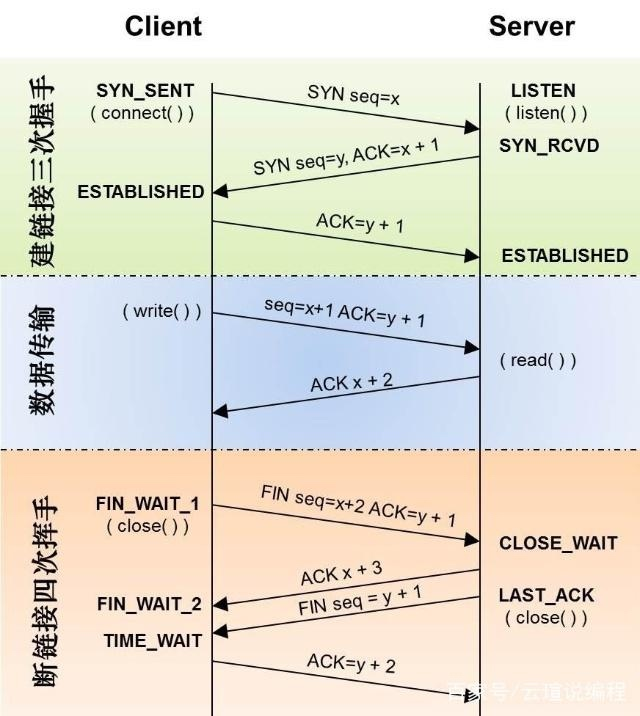

TCP vs UDP 总结
TCP/IP协议历史
历史回溯
TCP/IP的起源可以追溯到由美国国防部(DoD)高级研究计划局(DARPA)在二十世纪六十年代后期和七十年代早期进行的研究。下面摘要列出了TCP/IP发展史上的一些重大事件：
1970年，ARPANET主机开始使用网络控制协议(NCP)，这就是后来的传输控制协议(TCP)的雏形。
1972年，Telnet协议推出。Telnet用于终端仿真以连接相异的系统。在二十世纪七十年代早期，这些系统使用不同类型的主机。
1973年，文件传输协议(FTP)推出。FTP用于在相异的系统之间交换文件。
1974年，传输控制协议(TCP)被详细规定下来。TCP取代NCP，它为人们提供了更可靠的通信服务。
1981年，Internet协议(IP)(又称IP版本4[IPv4])被详细规定下来。IP为端到端传递提供寻址和路由功能。
1982年，国防通信署(DCA)和ARPA建立了传输控制协议(TCP)和Internet协议 (IP)作为TCP/IP协议套件。
1983年，ARPANET将NCP替换为TCP/IP。
1984年，域名系统(DNS)推出。DNS可将域名(如www.example.com)解析为IP地址(如192.168.5.18)。
1995年，Internet服务提供商(ISP)开始向企业和个人提供Internet接入。
1996年，超文本传送协议(HTTP)推出。万维网使用HTTP。
1996年，第一套IP版本6(IPv6)标准发布。
相关文献
TCP协议： https://tools.ietf.org/html/rfc793 - September 1981
UDP协议： https://tools.ietf.org/html/rfc768 - 28 August 1980
其实UDP先于TCP进入标准库中
七层协议
| OSI中的层 | 功能 | TCP/IP协议族 |
|---|---|---|
| 7 应用层 | 文件传输，电子邮件，文件服务，虚拟终端 | TFTP，HTTP，SNMP，FTP，SMTP，DNS，Telnet 等等 |
| 6 表示层 | 数据格式化，代码转换，数据加密 | 没有协议 |
| 5 会话层 | 解除或建立与别的接点的联系 | 没有协议 |
| 4 传输层 | 提供端对端的接口 | TCP，UDP |
| 3 网络层 | 为数据包选择路由 | IP，ICMP，OSPF，EIGRP，IGMP |
| 2 数据链路层 | 传输有地址的帧以及错误检测功能 | SLIP，CSLIP，PPP，MTU |
| 1 物理层 | 以二进制数据形式在物理媒体上传输数据 | ISO2110，IEEE802，IEEE802.2 |
7层和5层的区别，其实就在于应用层，而应用层只是在应用本身来进行区分，分别为会话层、表示层、应用层。
UDP和TCP的描述
TCP详解
特点：可靠，稳定。
TCP的可靠性方案：
1. 三次握手来建立连接。
2. 在数据传递时，有确认、窗口、重传、拥塞控制机制
3. 四次挥手，主要是为了保证最后一次请求能正常处理完成
4. 在数据传完后，还会断开连接用来节约系统资源。

TCP的缺点： 慢，效率低，占用系统资源高，易被攻击
TCP在传递数据之前，要先建连接，这会消耗时间，而且在数据传递时，确认机制、重传机制、拥塞控制机制等都会消耗大量的时间，而且要在每台设备上维护所有的传输连接，
事实上，每个连接都会占用系统的CPU、内存等硬件资源。 而且，因为TCP有确认机制、三次握手机制，这些也导致TCP容易被人利用，实现DOS、DDOS、CC等攻击。
UDP详解
特点：快，比TCP稍安全
UDP是一个无状态的传输协议，所以它在传递数据时非常快。
UDP的缺点： 不可靠，不稳定
因为UDP没有TCP那些可靠的机制，在数据传递时，如果网络质量不好，就会很容易丢包。
特点对比
1.基于连接与无连接；
2.对系统资源的要求（TCP较多，UDP少）；
3.UDP程序结构较简单；
4.流模式与数据报模式；
5.TCP保证数据正确性，UDP可能丢包，TCP保证数据顺序，UDP不保证。